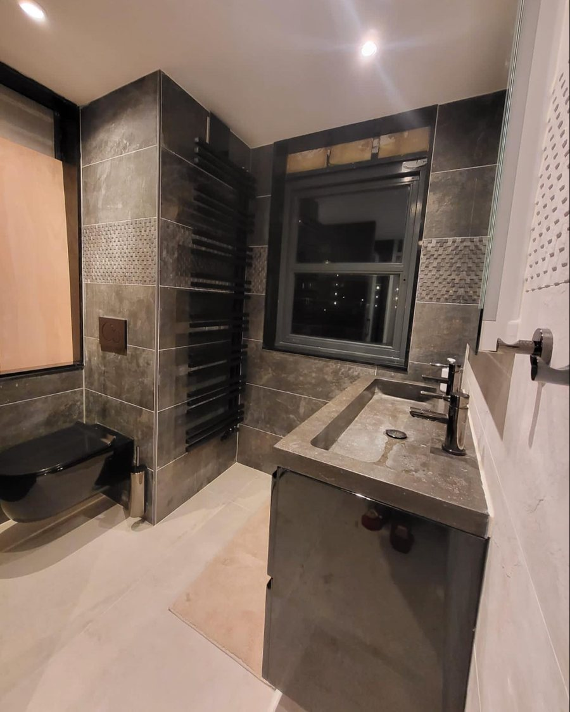
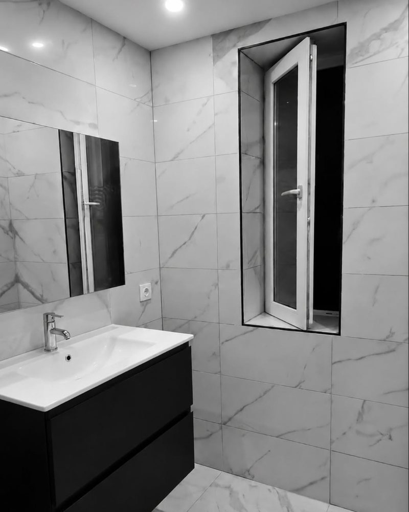
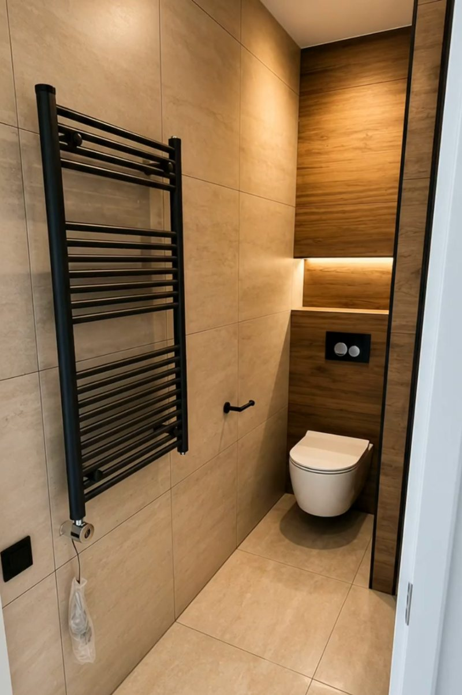
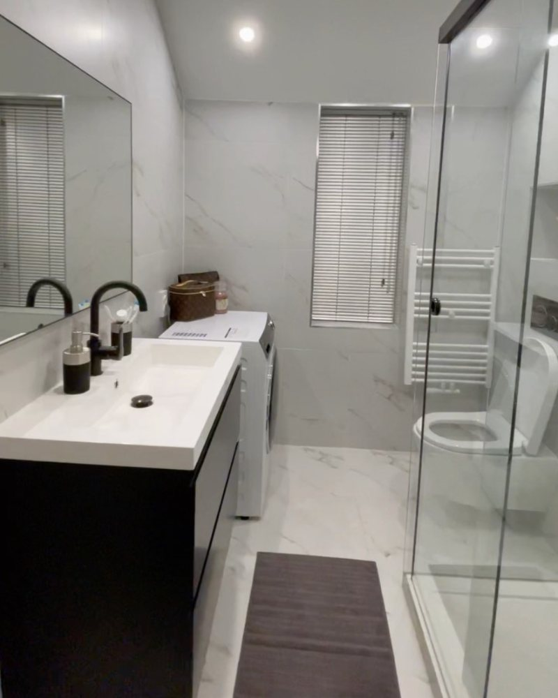
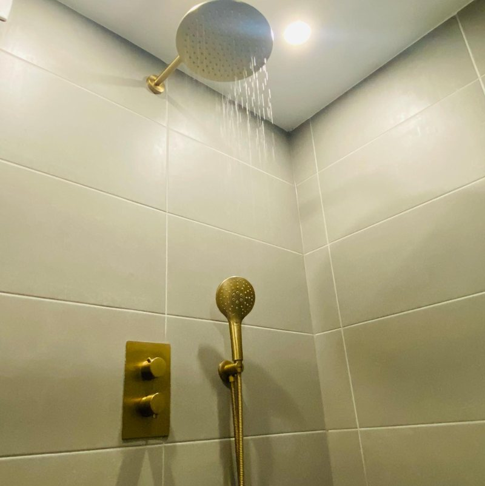
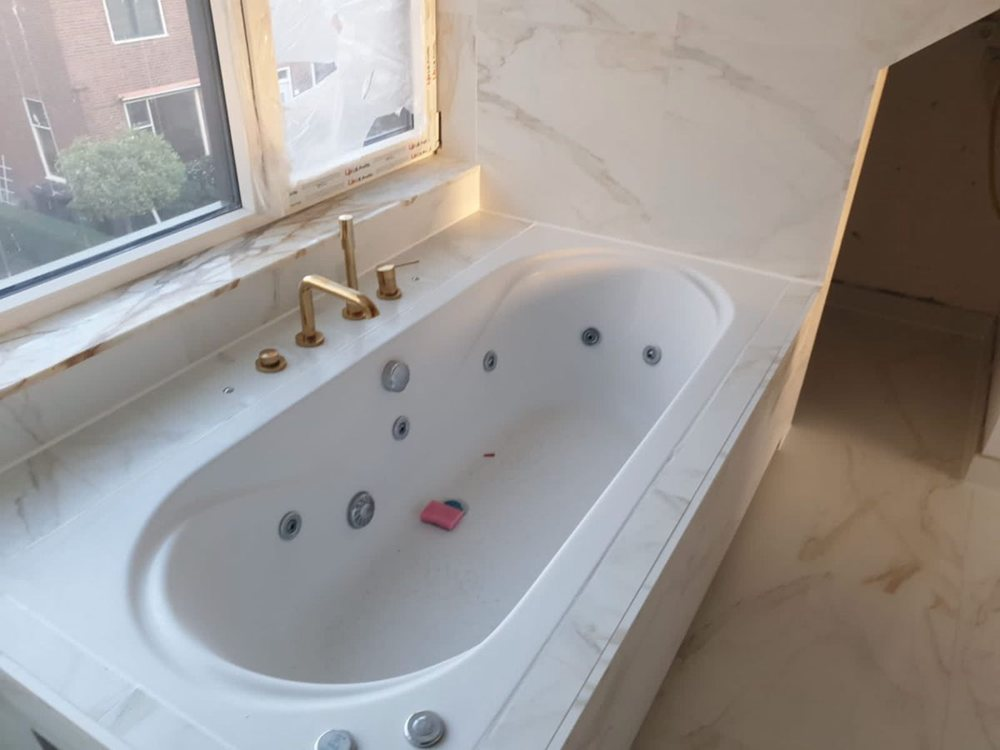
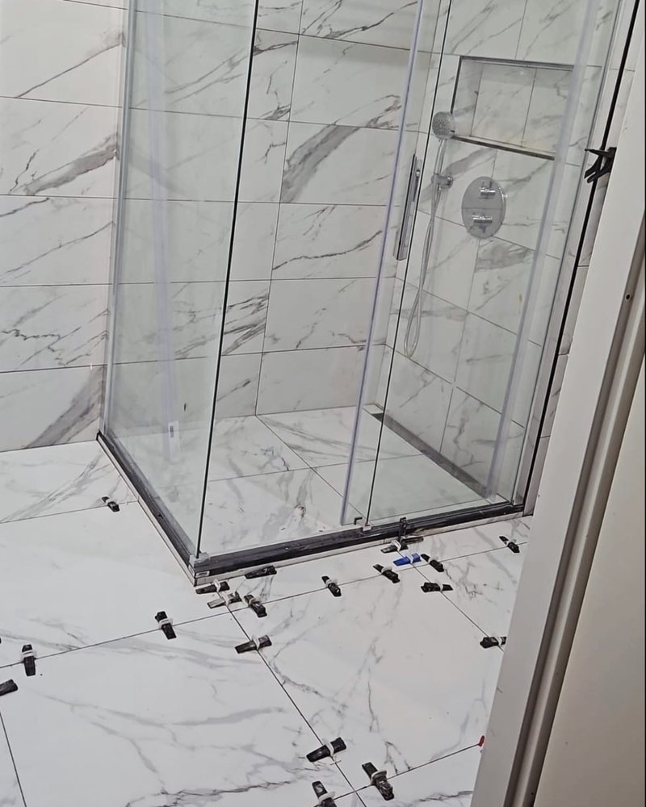
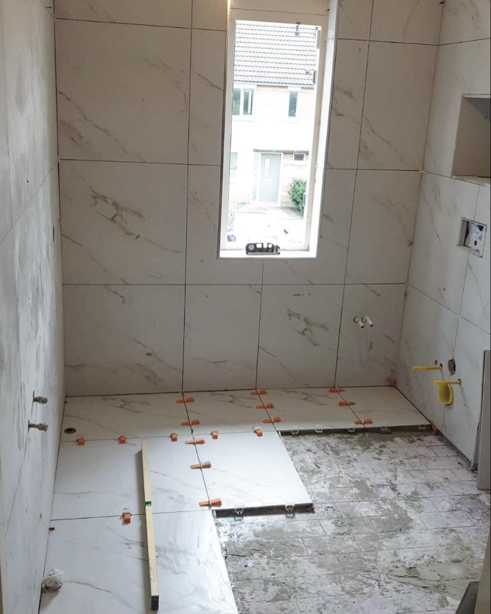
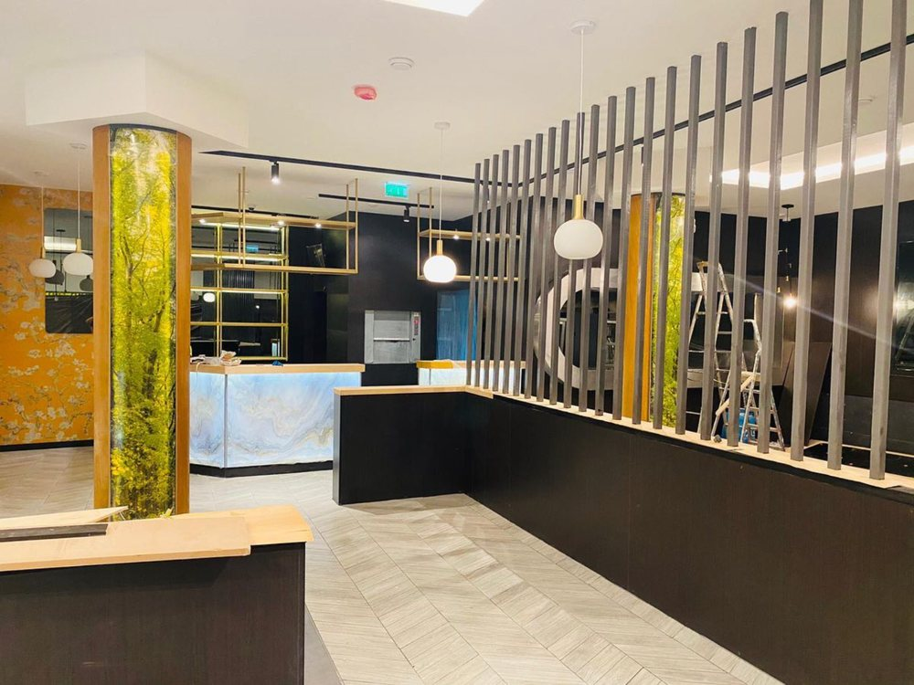
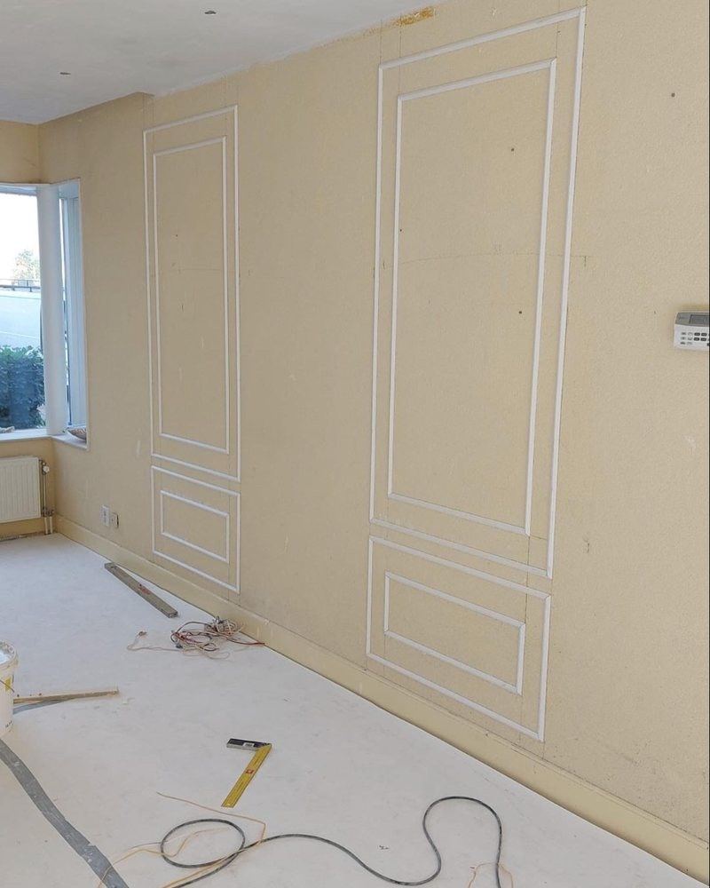

Badkamerrenovatie
Complete badkamers: sloop, leidingwerk, tegelen, sanitair en afwerking, inclusief inloopdouche, dubbele wastafel of bad.
Woodpecker Bouw verzorgt renovaties van A tot Z: badkamers, toiletten, tegelwerk, schilderwerk, aan- en uitbouwen en zelfs complete restaurants. Met gratis opname en een vaste prijs.

Badkamerrenovatie · eigen projectGeen losse partijen die op elkaar moeten wachten. Woodpecker Bouw voert de renovatie uit van begin tot eind.
Complete badkamers: sloop, leidingwerk, tegelen, sanitair en afwerking, inclusief inloopdouche, dubbele wastafel of bad.
Hangend toilet, nieuwe tegels en een strakke afwerking. Compact, strak en netjes afgewerkt.
Wanden en vloeren in marmerlook, steenlook of houtlook, netjes gezet met leveling-systeem voor een vlakke afwerking.
Leidingwerk en installaties horen bij de renovatie. U hoeft geen aparte vakmensen te zoeken.
Schilderwerk, plinten en wandpanelen: de details waardoor een woning er afgewerkt uitziet.
Een nieuwe keuken, een uitbouw of een volledige woningrenovatie. Vraag vrijblijvend naar de mogelijkheden.
Wij komen langs, meten op en bespreken uw wensen. Geheel vrijblijvend.
U weet vooraf waar u aan toe bent. Geen verrassingen aan het eind van de klus.
Een complete badkamerrenovatie, volgens eigen opgave van Woodpecker Bouw, in circa twee weken.
Een selectie uit het eigen Instagram-kanaal van Woodpecker Bouw.







We komen bij u thuis, bekijken de ruimte en bespreken stijl, materialen en budget.
U ontvangt een duidelijke offerte waarin alles is opgenomen.
Wij voeren het werk uit en leveren op. Voor een badkamer rekent Woodpecker Bouw op 12 tot 14 dagen.
Naast badkamers en toiletten werkt Woodpecker Bouw aan complete woningrenovaties, wandpanelen en het inrichten van restaurants. Heeft u een groter plan? Laat het weten, dan denken we graag mee.


Actief in de regio Rotterdam en tot ongeveer 60 km eromheen. Twijfelt u of uw adres binnen het werkgebied valt? Stuur gerust een berichtje.
De snelste manier is een berichtje via WhatsApp. Reageren kan ook via bellen of e-mail.